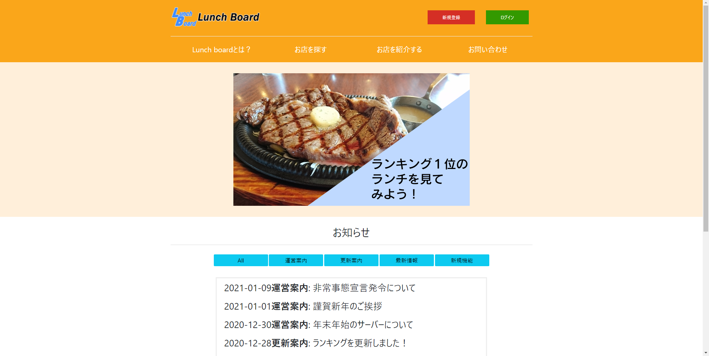

-Works-
- 
ページ写真はこちら
-
タイトル：
Lunch Board
目的：
大学生・高校生向け飲食店レビューサイト説明：
ターゲットを学生に絞った飲食店レビューサイトで、大学の演習講義課題で制作したものを少し改変したものです。
下書きをAdobe XDで、画像をillustrator、PowerPointを使用しました。使用ソフト・言語：
[ソフト]WebStorm / VisualStudio Code / Adobe XD / illustrator / GitHub / PowerPoint / PhotoScape
[言語]HTML・CSS / Sass / JavaScript